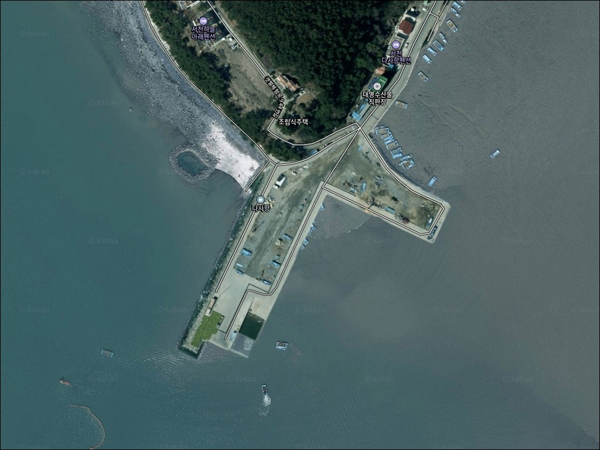
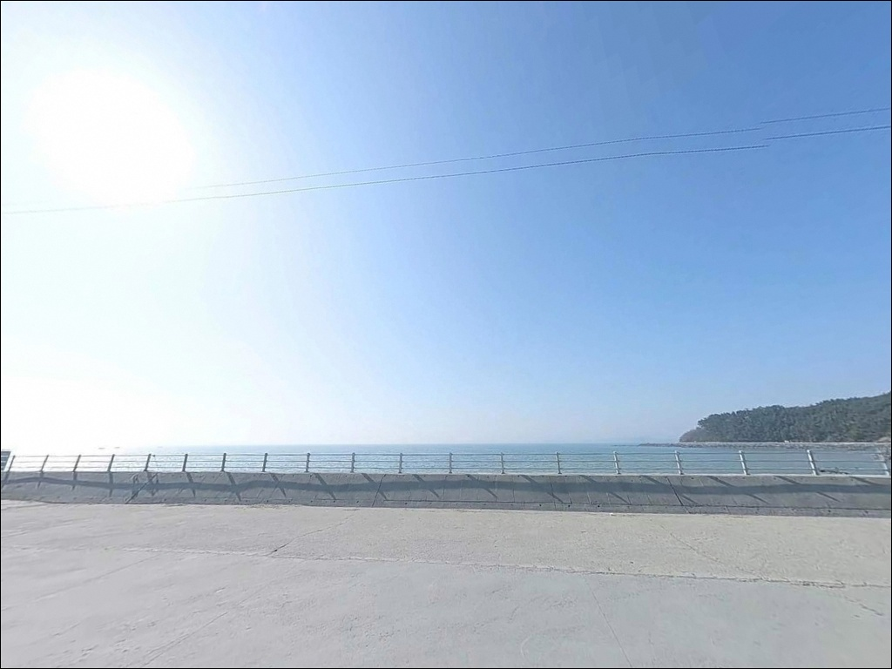
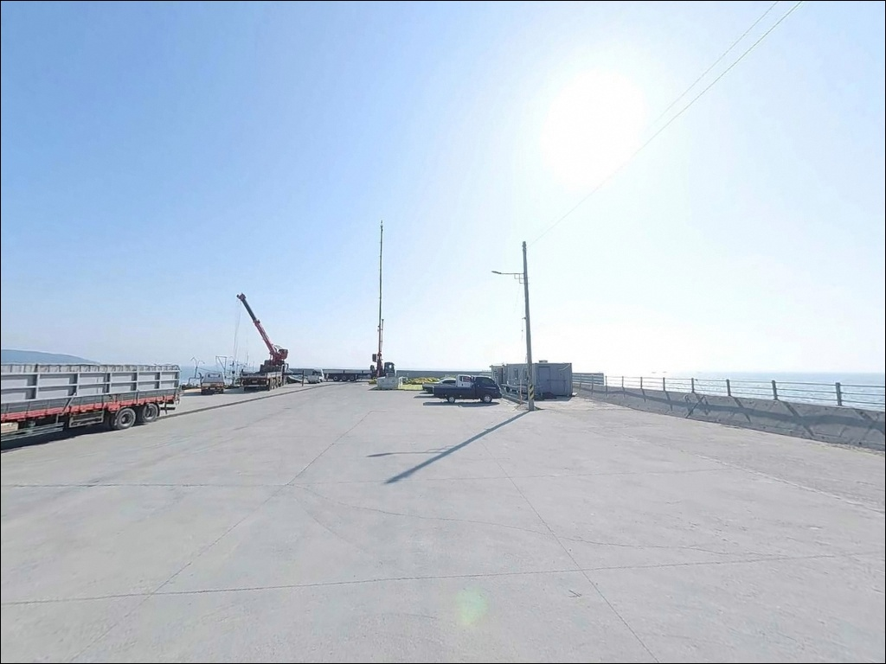
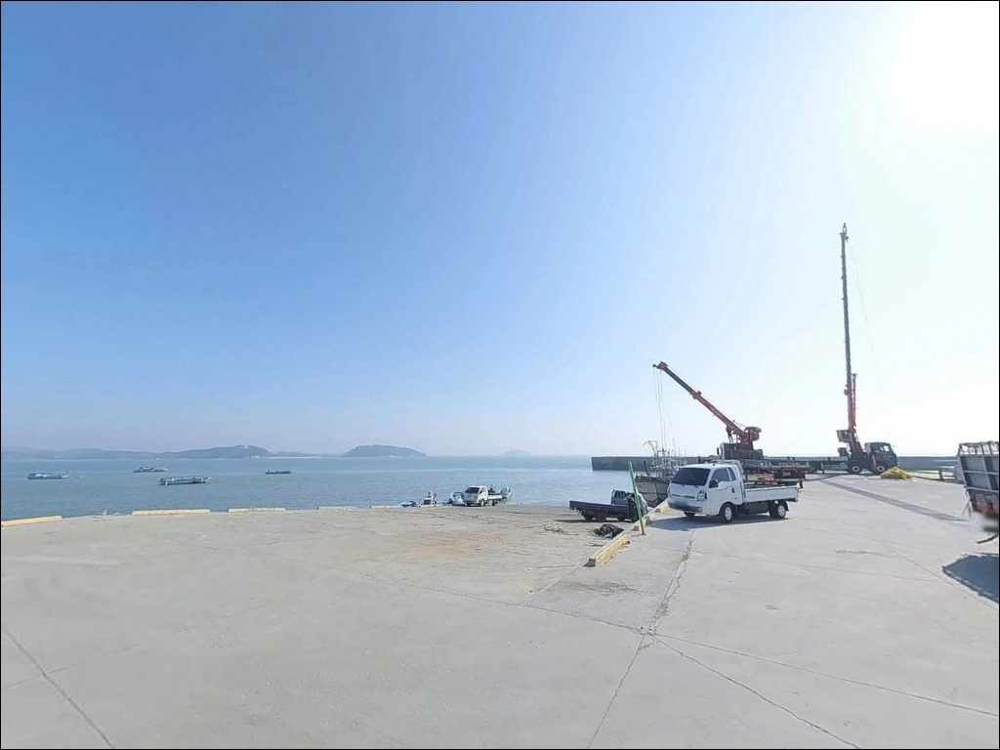
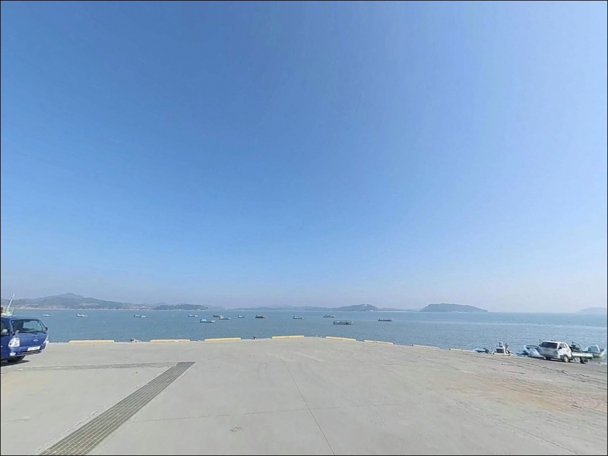
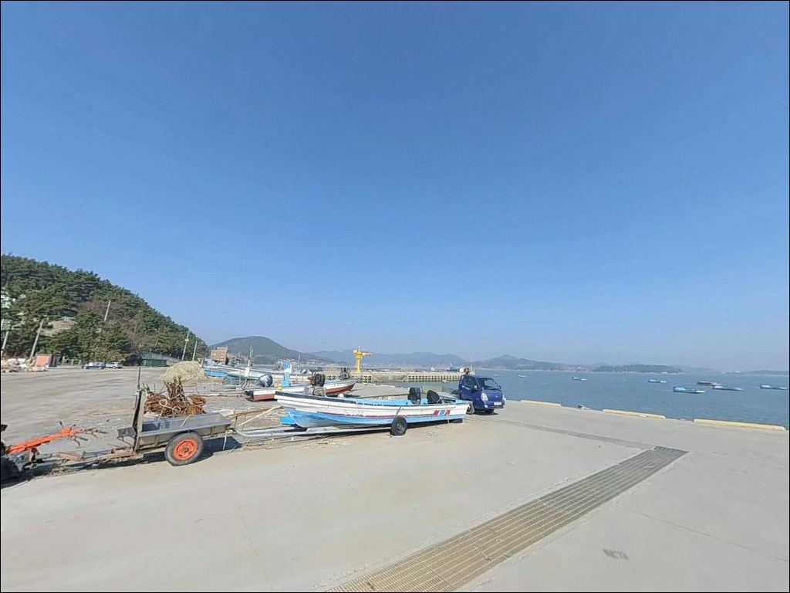
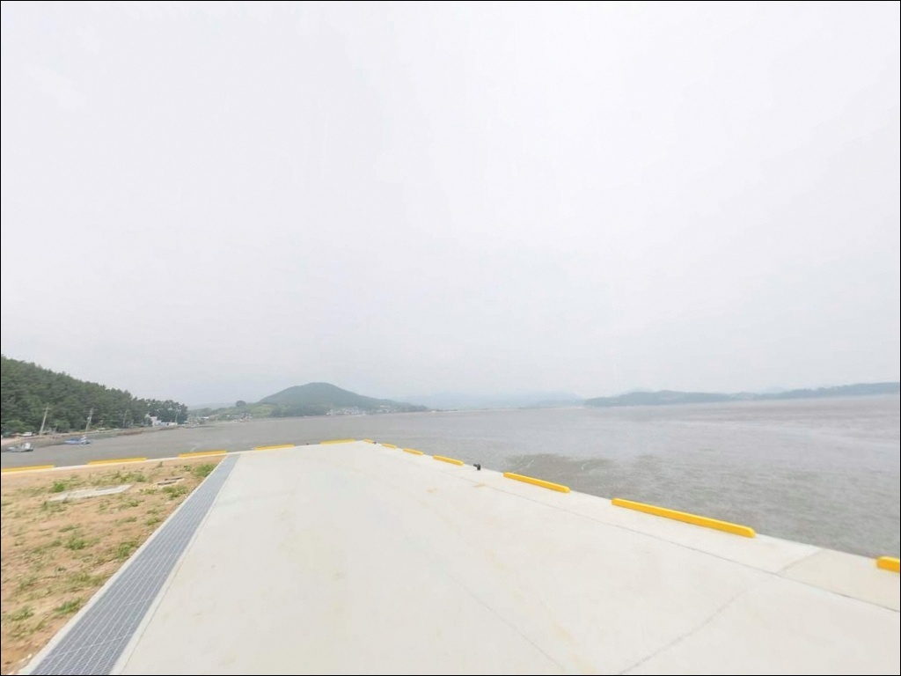
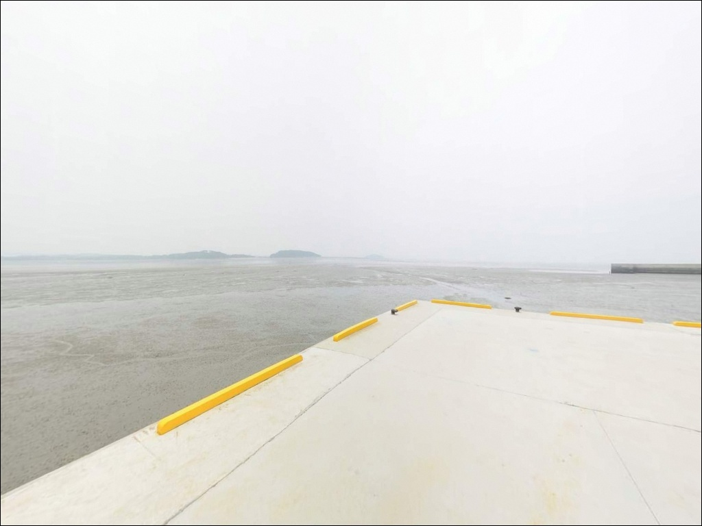
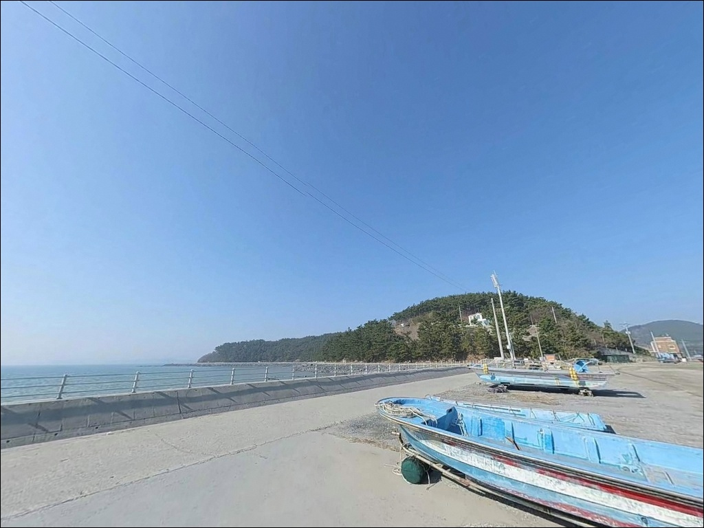

다사항, 충남 서천군 풍경이 깊은 여운을 남기는 차박, 낚시 해안
이 페이지에는 광고(제휴 링크 포함)가 있으며, 광고 링크를 통해 구매하면 운영자가 판매 수익 또는 수수료를 받을 수 있습니다. 포인트 사진: 카카오맵 스카이뷰·로드뷰. 이 페이지의 지도·사진 이미지는 카카오맵의 실제 서비스 이미지와 다를 수 있습니다.


포인트 안내
다사항
충남 서천군 비인면 다사리 473
서해 소형 포구에서 가장 자주 틀리는 판단은
물때 확인 없이 출발하는 것입니다.
간조 시 수심이 크게 낮아지면
방파제 앞쪽에 갯벌이 드러나
어떤 채비로도 낚시 자체가 어려워집니다.
다사항은 장구만 북쪽 끝자락에 자리한 소형 연안 포구로,
외항 방파제가 바다 쪽으로 길게 뻗은 구조입니다.
방파제 끝단 수심이 6~10m 수준으로 확보되는 편이지만,
물때에 따라 낚시 가능 구간이 크게 달라지는
서해 전형 타입의 포인트입니다.
이 글은
다사항의 진입 동선, 차박 여건,
물때 기반 낚시 조건, 스타일별 공략 방식에 집중합니다.
조황 단정이나 특정 어종 보장은
이 글의 범위에 포함되지 않습니다.

1. 진입 동선과 포인트 접근성
비인면 해안도로에서 다사리 방면으로 들어서면
포장된 마을길을 따라 포구 안쪽까지 접근할 수 있습니다.
경사 구간은 크지 않은 편이지만,
폭이 좁은 마을 진입로 특성상
대형 SUV나 캠핑 차량은 진입 전
위성지도로 도로 폭을 미리 확인해 두는 것이 좋습니다.
회차는 포구 안쪽 공터에서 가능하며,
방파제 입구 부근에도 차량을 세울 수 있는 공간이 있습니다.
어선 접안 동선과 겹치지 않는 자리를 먼저 확인하고
주차 위치를 잡아야 합니다.
특히 새벽~이른 아침 어선 조업 시간대에는
방파제 점유를 피하는 것이 기본 매너입니다.
소형 어촌 포구 특성상 차량 접근 자체는
소형~중형 차량 기준으로 어렵지 않은 편입니다.
초행이라면 낮에 한 번 진입로를 미리
확인해 두는 것이 야간 출조에서 실수를 줄입니다.

2. 차박 환경과 야간 체류 여건
다사리 일대는 민가 밀집도가 낮고
소규모 어촌 분위기가 유지되는 구간입니다.
야간 차량 통행이 거의 없어 조용한 환경이지만,
포구 자체가 개방형 구조라 프라이버시는 낮은 편입니다.
차박 메인 목적보다는
낚시 후 짧게 머무는 식의 이용이 어울립니다.
가로등은 포구 기본 조명 수준으로만 있어
방파제 끝단 쪽으로 갈수록 광량이 부족합니다.
개인 헤드랜턴과 랜턴은 반드시 챙겨야 합니다.
외항 쪽 노출이 있는 지형이라
북서풍이 강한 날에는 바람 영향이 클 수 있어
기상 예보 확인이 체류 안전의 기본입니다.


3. 주변 편의시설 및 인프라 현황
다사항 반경 내에는 즉시 이용 가능한
편의점이나 식당을 기대하기 어렵습니다.
비인면 소재지까지 차량으로 약 5~7분 거리가 있어
면소재지 농협·소형 매점 수준의 인프라를 이용할 수 있지만,
실제 운영 여부는 현장에서 확인해야 합니다.
식수, 얼음, 낚시 소품, 연료는
출발 전에 모두 갖추고 진입하는 것이 현실적인 준비 방식입니다.
보다 넓은 인프라가 필요하다면
차로 약 15분 거리의 홍원항 일대를
기점으로 활용하는 것이 효율적입니다.

4. 방문 전 반드시 챙겨야 할 준비사항
다사항 방문에서 가장 먼저 확인할 것은 물때입니다.
바다타임에서 다사항 기준 물때를 확인하고,
중들물 전후 또는 만조 전후 타이밍을 기준으로
출발 시각을 맞추는 것이 방문 전 첫 번째 판단입니다.
사리 전후 조류가 강한 시기에는
채비 컨트롤이 어려워지므로 조금 전후를 우선합니다.
서해 소형 포구는 기상 변화가 빠른 편입니다.
당일 아침 기상청 예보를 다시 확인하고,
풍속 10m/s 이상 또는 파고 1m 이상일 경우
출조 일정을 재검토하는 것이 좋습니다.
모래·뻘 바닥 특성상 채비 손실은 적은 편이지만
여분 채비는 넉넉하게 준비하는 편이 안전합니다.
방파제 낚시 시 구명조끼는 기본 착용 사항입니다.
야간 발판이 미끄러울 수 있으므로
논슬립 신발과 헤드랜턴도 함께 챙겨야 합니다.
어선 작업 동선과 겹치지 않도록
자리를 잡는 것이 이 포인트의 기본 매너입니다.

5. 물때에 따라 낚시 자리가 달라지는 이유
다사항은 장구만 입구 북쪽에 위치한 소형 연안 포구로,
방파제가 바다 쪽으로 길게 돌출된 구조입니다.
외항 방파제 끝단으로 갈수록 수심이 깊어지며,
바닥은 모래와 뻘이 혼합된 구성으로
바닥 어종 탐색에 유리한 지형 조건을 갖추고 있습니다.
서해 조석간만 차가 큰 이 해역에서는
만조 시 방파제 전역이 낚시 가능 구간이 되지만,
간조에 접어들면 수심이 크게 낮아지며
포구 안쪽부터 갯벌이 드러나기 시작합니다.
방파제 끝단은 내항보다 수심 변화가 크고 조류 영향을 직접 받아
루어 반응이 살아나는 자리입니다.
중들물~만조 전후 2~3시간 타이밍에
집중하는 것이 이 포인트의 기본 공략법입니다.
개야도 방면 조류가 이 해역에 영향을 미치는 구조로,
방파제 꺾임 구간이나 끝단에서
조류 변화가 생기는 타이밍에 입질이 살아나는 경향이 있습니다.
출조 전 최신 조황은 검색을 통해 확인해 보시기 바랍니다.


6. 포인트에 어울리는 낚시 스타일
이 포인트에서 가장 기본적인 방식은 원투낚시입니다.
모래와 뻘이 혼합된 바닥 특성상
청갯지렁이 미끼를 써서 방파제 외항 쪽으로
멀리 던져 바닥층을 탐색하는 접근이 잘 맞습니다.
만조 전후 외항 방향으로 길게 던져
조류가 흐르는 구간을 노리는 방식이 유효합니다.
루어낚시도 이 포인트에 어울리는 스타일입니다.
만조 전후 방파제 끝단이나 외항 쪽에서
미노우·바이브레이션 계열로 농어를 공략하는 방식은
서천 인근 방파제에서 확인되는 패턴입니다.
조류가 살아 있는 타이밍에 집중하면
반응이 올라오는 구간이 분명해지는 편입니다.
에깅도 시도해 볼 수 있습니다.
가을 시즌 갑오징어가 서천 인근 해역에서 확인되는 어종이며,
방파제 끝단 외항 쪽에서 에기를 천천히
끌어오는 방식이 이 지형과 맞는 공략입니다.
조류가 흐르는 타이밍에 집중하는 것이 기본입니다.
릴찌낚시는 만조 전후 내항이 안정적으로 유지될 때
감성돔이나 숭어를 노려볼 수 있는 스타일입니다.
물색과 조류 세기에 따라 조황 편차가 큰 방식이라
당일 조건을 보고 판단하는 것이 현실적입니다.

7. 대안 포인트와 플랜 B 동선
다사항 여건이 여의치 않다면
차로 약 15분 거리에 있는 홍원항이 첫 번째 대안입니다.
서방파제 길이만 약 500m에 달하는 서천 대표 어항으로,
원투낚시와 루어낚시가 모두 가능하고
인근 횟집·식당 등 편의 인프라도 갖춰져 있어
다사항과 하루에 묶어서 돌아보기 좋은 동선입니다.
홍원항 서방파제 끝 구간은
원투낚시 자리로 안정적이며,
서방파제 초입 테트라포드 부근에서는
만조 타이밍에 루어로 농어를 공략할 수 있습니다.
선상낚시 선단이 운항하는 거점이기도 해
조과가 불안정하다면
선상 옵션으로 전환하는 것도 현실적인 선택입니다.
차박 여건이 더 넓게 필요하다면
홍원항보다 공간 여유가 있는
춘장대해수욕장 인근을 대안으로 볼 수 있습니다.

물때만 맞추면 다사항은
조용하게 즐기기 좋은 서해 포인트입니다
원투낚시나 루어를 주력으로 하는 낚시인이라면
다사항의 지형 조건은 잘 맞는 구조입니다.
모래·뻘 바닥과 방파제 외항 수심이
원투 탐색에 유리한 편이고,
만조 전후 타이밍에는 루어 반응도
살아나는 지형 구조입니다.
반면 물때 확인 없이 간조에 진입하거나,
편의시설 없이 무방비로 찾아가면
낚시 시작조차 어려운 상황을 맞을 수 있습니다.
물때 확인, 자급 준비, 진입로 사전 점검,
이 세 가지를 갖추고 간다면
사람이 붐비지 않는 조용한 서해 방파제 포인트로서
기억에 남는 출조가 될 수 있습니다.
소형 어촌 포구 특성상 프라이버시는 낮은 편이지만,
낚시 후 물때가 맞는 시간을 기다리며
차 안에서 조용히 쉬어가는 차박 낚시 스타일에는
나쁘지 않은 선택지입니다.